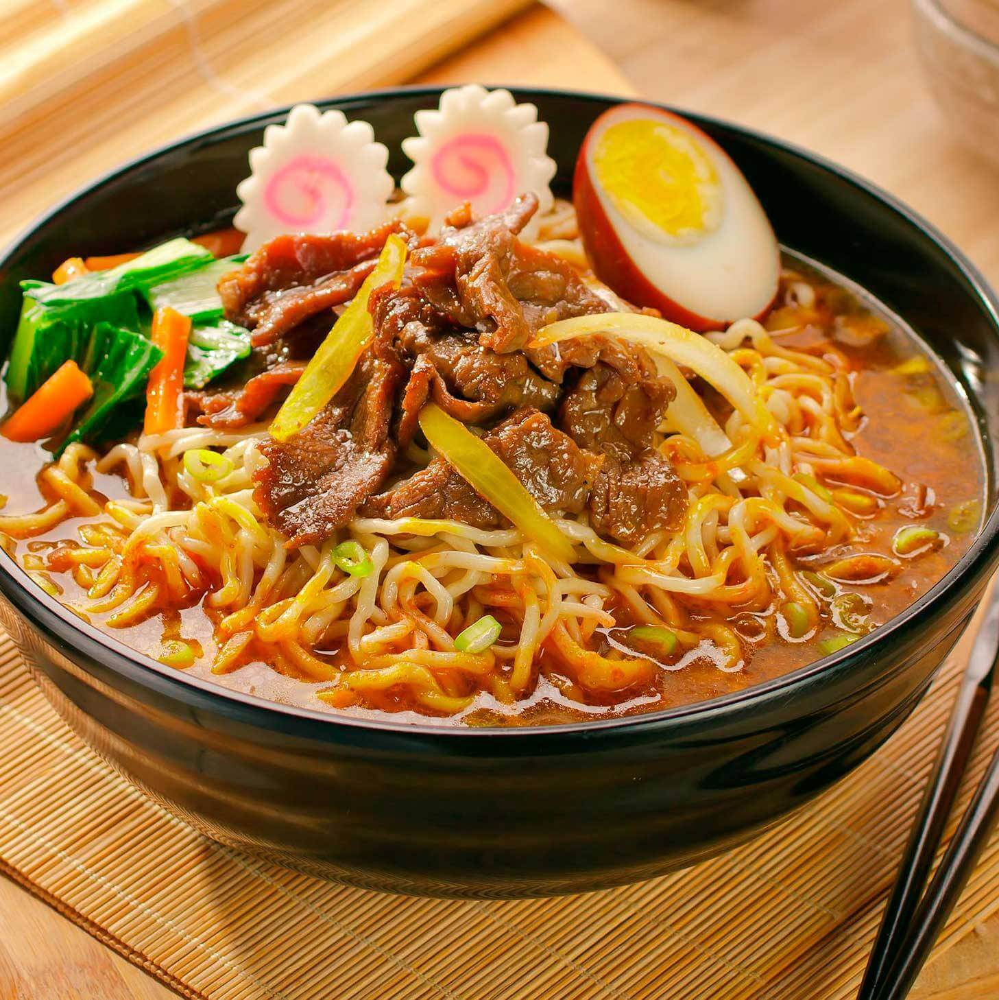
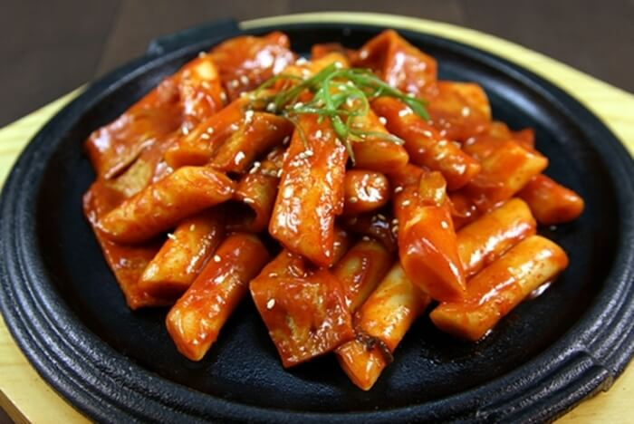
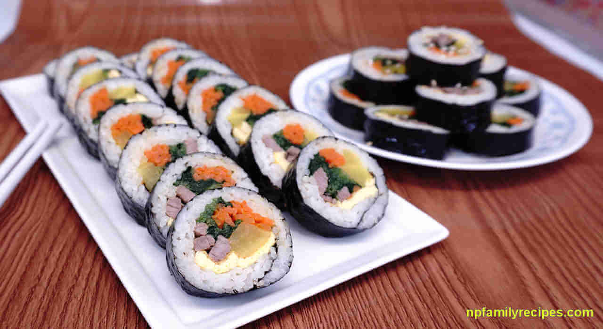
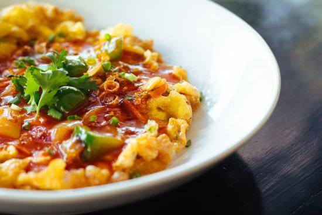
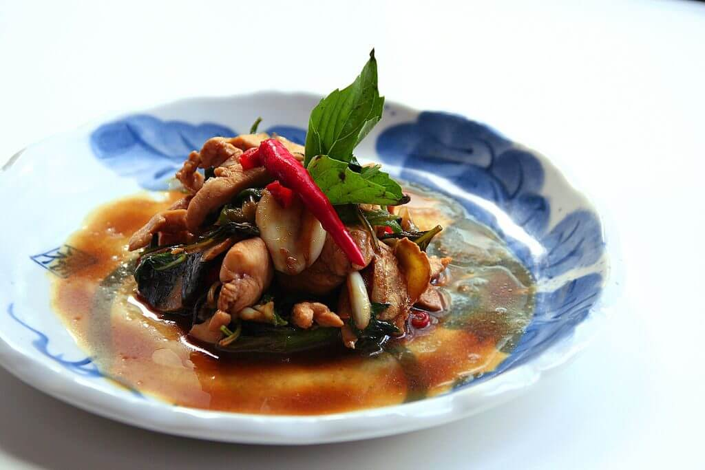

Selendang Mayang
Minuman khas betawi ini jarang ditemui karena dikalangan masyarakat Betawi dianggap minuman kuno.Selendang mayang biasanya disajikan ketika acara tertentu, saat lebaran, acara keluarga, arisan dan lainnya. Bahan dasar pembuatan selendang mayang adalah tepung beras. Sedangkan kuahnya terbuat dai daun pandan, gula merah, garam, gula dan air santan. Minuman ini selain menghilangkan dahaga pun mengenyangkan karena porsinya yang cukup banyak.

Es Doger
Minuman yang enak disantap saat hari panas ini memang mudah dijumpai di mana pun. Minuman ini terdiri dari alpukat, kelapa muda, nangka, cincau, susu kental manis dan es. Banyak pedagang kaki lima yang berjualan di pinggir trotoar , harganya pun sangat terjangkau.
Korean Food

Ramen
Ramyeon atau Ramyun adalah hidangan mi kuah ala Korea. Mi ramyeon dapat dibuat dari mi basah atau mi instan, beberapa
merek ramyeon instan selain dikonsumsi di Korea Selatan, ada juga yang diekspor ke luar negeri, seperti ke Tiongkok,
Hong Kong, Makau, Jepang, dan Indonesia. Ramyeon Korea umumnya bercita rasa agak pedas. Di Korea Selatan, merek yang
menguasai pasar adalah Shin Ramyun.

Kimchi
Kimchi adalah makanan tradisional Korea, salah satu jenis asinan sayur hasil fermentasi yang diberi bumbu pedas. Setelah
digarami dan dicuci, sayuran dicampur dengan bumbu yang dibuat dari udang krill, kecap ikan, bawang putih, jahe dan bubuk
cabai merah. Sayuran yang paling umum dibuat kimchi adalah sawi putih dan lobak. Di zaman dulu, kimchi diucapkan sebagai
chim-chae (Hangul: 침채; Hanja: 沈菜) yang berarti "sayuran yang direndam." Di Korea, kimchi selalu dihidangkan di waktu
makan sebagai salah satu jenis banchan yang paling umum. Kimchi juga digunakan sebagai bumbu sewaktu memasak sup kimchi
(kimchi jjigae), nasi goreng kimchi (kimchi bokkeumbap), dan berbagai masakan lain.

Tteokbokki
Tteokbokki adalah penganan Korea berupa tteok dari tepung beras yang dimasak dalam bumbu gochujang yang pedas dan manis.
Tteok yang dipakai berbentuk batang atau silinder. Penganan ini merupakan makanan rakyat yang banyak dijual di pojangmacha.
Pada awalnya, penganan ini berasal dari masakan istana Dinasti Joseon yang disebut gungjung tteokbokki. Pada waktu itu,
masakan ini berupa huintteok yang dimasak dengan kecap asin bersama daging sapi, bagogari, kecambah kacang hijau, peterseli,
shiitake, wortel, dan bawang bombay.

Bibimbap
Bibimbap adalah masakan Korea berupa semangkuk nasi putih dengan lauk di atasnya berupa sayur-sayuran, daging sapi,
telur, dan saus pedas gochujang. Namanya secara harafiah berarti "nasi campur" yang berasal dari kata 비빔 (campur) dan
밥 (nasi). Sebelum dimakan, nasi dan lauk diaduk menjadi satu. Bibimbap memiliki variasi yang banyak menurut daerahnya
di Korea. Kota Jeonju di Jeolla Utara adalah kota asal variasi bibimbap daerah yang paling terkenal di Korea. "Jeonju
bibimbap" (nasi campur Jeonju) merupakan bibimbap yang berisi lauk pauk yang paling banyak di Korea.

Gimbap
Gimbap adalah jenis makanan Korea yang terdiri dari nasi yang dibungkus dengan rumput laut. Gimbap populer sebagai makanan
yang dibawa piknik, hiking atau aktivitas lain di luar ruangan
Chinese Food

Kwetiau
Hampir sama dengan bakmi, kwetiau merupakan mi yang juga banyak peminatnya di Indonesia. Bedanya hanya pada tekstur
dan bentuknya saja. Kwetiau memiliki tekstur lebih kenyal dan bentuknya lebih lebar.

Fu Yung Hai
Puyonghai adalah masakan Tionghoa yang dibuat dari telur yang didadar dengan campuran berupa sayuran,daging, atau makanan
laut. Isi campuran bisa berupa cincangan halus daging ayam, daging sapi, daging kepiting, dan sebagainya. Fu yong hai
dimakan bersama saus asam manis yang biasanya dibuat dari tomat dan kacang polong, tetapi ada juga saus yang disertai
dengan potongan nanas di dalamnya.

Jiozi
Jiaozi adalah daging ayam atau udang dan sayuran yang dicincang dan dibungkus lembaran tepung terigu. Adonan kulit
dibuat dari campuran tepung terigu, air, dan garam dapur. Makanan ini dimatangkan dengan cara direbus. Di Jepang, makanan
serupa disebut gyōza, sementara di Korea disebut mandu. Jiaozi tidak sama dengan pangsit (wonton). Kulit jiaozi lebih
tebal dari pangsit. Dari peninggalan Zaman Musim Semi dan Gugur di Cina diketahui bahwa orang pada zaman itu sudah
memakan jiaozi.

Kaoya
Kaoya adalah istilah yang digunakan masyarakat Cina untuk menyebut hidangan bebek peking. Masakan tradisional Cina
yang satu ini berasal dari kota Beijing dan saat ini telah menyebar hingga ke seluruh dunia. Kaoya atau bebek peking
panggang biasa disantap secara langsung dengan diiris halus atau juga disantap bersama kulit pancake khas Cina.

Sanbeiji
Sesuai dengan istilahnya sanbeiji yang berarti tiga cangkir, daging ayam dalam hidangan ini dimasak dengan tiga
cangkir bumbu yakni secangkir anggur beras, secangkir kecap manis dan secangkir lemak daging babi


Terimakasih telah berkunjung :) Jika ada saran dan kritik silahkan tulis dibawah